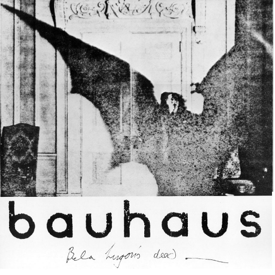
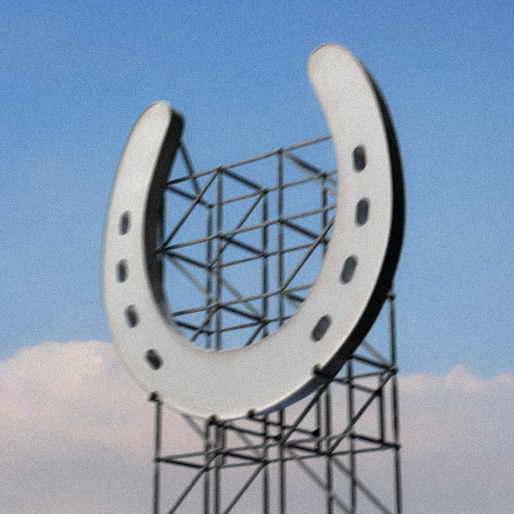
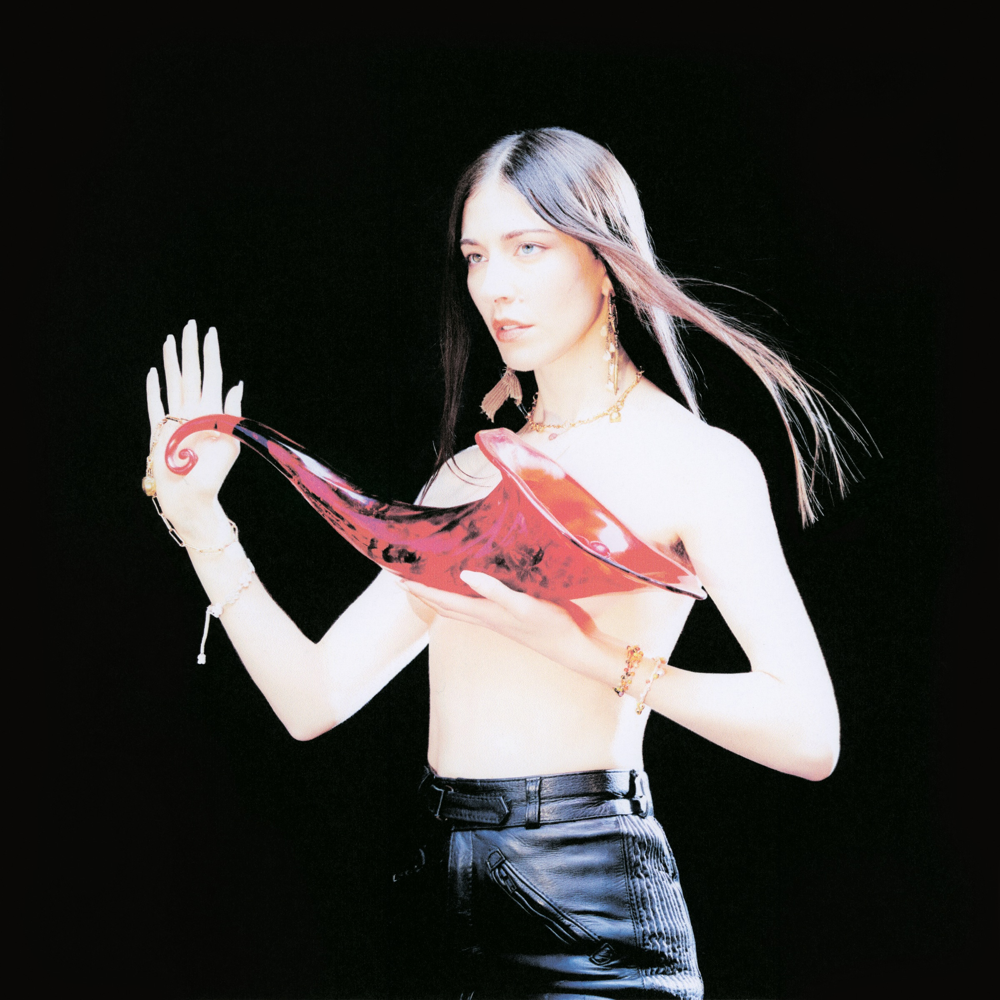

|  |
| added '25 may 5 Bela Lugosi's Dead Bauhaus |
|  |
| added '25 feb 20 Uncanny long arms underscores & Jane Remover |
| an irreversible threshold for Wallsocket, Michigan; intriguing for herself, as who it's vital to, and to everyone else in the town, completely arresting. but to them, that metamorphosis seems isolating and damaging to the social cohesion of the town. but it's not her fault, this new reach is unfounded; she herself may now engage more easily, but it affects every part of the push and pull she has between others. even when she's surgically changed 'back to normal', it all feels so crushing now, that the town as a whole can be so devastating to her... yet i still don't know what exactly that near-death epiphany afterward meant to her. but if it meant the world to her, her world deserves to live as best she can. and the song recounting it all recreates that kind of heart-wrenching, freeing revelation perfectly. written '25 feb 25 |
 |
| added 2024 oct 29 Enjoy the Silence Depeche Mode |
| added '24 oct 19 Empire Ants Gorillaz & Yukimi Nagano |
| our little companion to our crumbling colony. the stage-setting, breaking from death-spiral workloads splits off slowly into an utterly mystical, spiritually magnetizing culmination for what that severance means for you, for us, for them. but that out-of-body revelation becomes its own fantastical machine. it courts you back as a cog, dreaming of a kinder reality to house those experiences within. obviously the empire will fall, someday... so you might as well keep the machine in your mind whirring instead of your little boat project; the colony will tide you over. you will not lose yourself in its waves. promise. written '24 dec 20 |
 |
| added '24 jul 24 One Metallica |
| the opposite of catatonic, overbearingly so. it is grimy and disgusting and horrifyingly vivid, and its overwhelming emotion is paralyzing. the instrumental machine-gun fire and searing vocals are so brittle, and it feels like the soul of it is wishing desperately to be excised forever. there is no other metal song that feels so painfully realized and caustically terrifying. written '24 jul 28 |
| added '24 jun 21 What's Going On Marvin Gaye |
| added '24 jun 16 Immaterial SOPHIE |
| i could've picked a few from this album; i wouldn't be surprised if i add another in the semi-distant future. but this one still stands alone. in a sea of experimentation so lavishly mechanical, and distorted squeals encapsulating fears, desire, love, and a transcendence wished to be reached in what her life was to her, this is the one that melts it all away. there's no longer any pretense, there's no longer any pain in just existence... and there's such a heartbreaking power in wanting to see this better world create itself—or become no world recognizable to this current one. and it does it by predictably, but ever so adeptly, fusing the hypermodern with the best of its inspirations. in that, it might be the best bubblegum bass song there will ever be. because none can hit that goal this perfectly. written '25 feb 7 |
| added '24 may 3 ü™ô Real House Adrianne Lenker |
| you can hear reverberations, feel all creak and shake under all; unsureness swells on if the divides of the inhabitants make it all any more meaningful. "feeling at home in the house of my body" as she ascribes here is all that can make this (whatever it may be, to you, to whomever) a real house. it is founded on, molded by mutual heartache and strange sentiments—despite, because of, or maybe in spite of that togetherness (of self? of in-group?). her voice is as understated and fervent as it ever has been, her capturing of this ever-ongoing process unforgettable. just like the process attested for, just as it must be to live. written '25 mar 17 |
| added '24 mar 19 The Revolution Will Not Be Televised Gil Scott-Heron |
| added '24 feb 14 movies for guys Jane Remover |
| i've tried and failed, so, so much, through countless attempts, to capture any inkling of what these sounds mean to me. i can't even convincingly say that my statements on Frailty as a whole got all that close. maybe i'll find the words someday, some way to reform my mind from the mush it's become, from years upon years of poorly fitted intentions, and i can break away those fragments, those fears of what it would've meant had i known it all sooner, had i wrapped it together any more neatly. but it's so unbearably hard to separate it, to sanction off that blackened piece from the few fuzzy memories, and create out of it any meaningful step. any set of stairs that leads me to a better avenue to say that this is the most important piece of art in my life. written '24 dec 20 |
| added 2023 dec 11 Track 10 Charli xcx |
| added '23 dec 10 I Don't Like Chief Keef & Lil Reese |
 |
| added '23 nov 7 ü™ô Heaven or Las Vegas Cocteau Twins |
| added '23 oct 20 Didn't Cha Know Erykah Badu |
|  |
| added '23 oct 12 Billions Caroline Polachek |
| added '23 sep 7 Yeah Right Vince Staples, Kendrick Lamar, SOPHIE, Flume & Kučka |
 |
| added '23 sep 5 Hydr6c0don$ Sickboyrari |
| added '23 aug 24 ü™ô On GP Death Grips |
| added '23 jun 22 u Kendrick Lamar |
| of every defining, intensely prescient statement made on this landmark, this is the one that has always cut the deepest—of him, his character, his friends and family, his community, his livelihood, eating himself alive to the point of complete self-destruction. it even takes a bite out of the lively hope he conjures on Alright immediately to follow. but at least it wasn't the ending. it's a death spiral, of course, but even then, it's also a face-to-face reckoning with what it means to be a public figure, to feel connection to your upbringing while simultaneously being pulled away from it so viciously. this whole record feels like that is its goal, to try and deal with those realities—it just hits the breaking point here, and it's only reconciliation and growth that can follow. written '24 dec 22 |
| added '23 may 19 Silver Soul Beach House |
| i still remember breaking down from this the first time. only Take Care from the album this is pulled from reaches near it, but the pushing and pulling, the eerily comforting tone backing up the best enchantment Victoria Legrand has ever delivered, it's all too much. i don't even think it's yearning, or that there's any one thing specifically it can (or wants to) harken to—it's just a spirit trapped in a current, and you grab hold of her so neither of you get lost forever. written '24 dec 15 |
| added '23 apr 27 I Love You Lil B |
| added '23 apr 24 A Lot's Gonna Change Weyes Blood |
| added '23 mar 22 90210 Travis Scott & Kacy Hill |
| added '23 jan 26 Once in a Lifetime Talking Heads |
| added '22 oct 27 Don't Cry J Dilla |
| added '22 aug 5 Untitled (How Does It Feel) D'Angelo |
(c) MMXXV, all rights reserved.